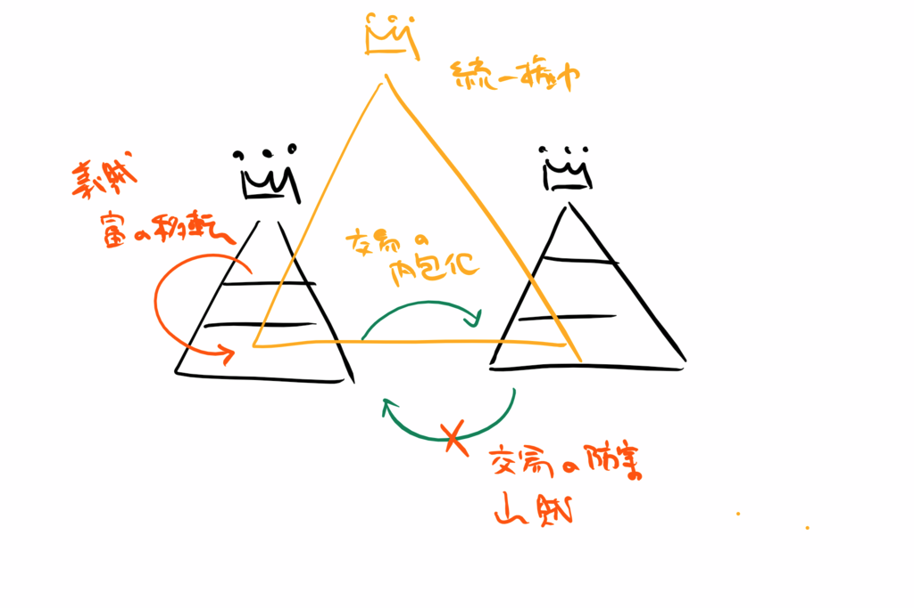

『海賊たちの中世』
公開日：
")
- 作者: 金谷匡人
- 出版社/メーカー: 吉川弘文館
- 発売日: 1998/11/01
- メディア: ペーパーバック
- この商品を含むブログを見る
海賊とは何か。漁民として生活し、海の交易を担った人びとが、同時に「海賊」と呼ばれる存在でもあった。戦国時代の瀬戸内海を舞台に、どの大名にも属さず、独自のルールで海の世界を自由に生きた海賊たちの姿を描く。
内容は自分で本を読めばわかると思うので、自分が思ったことを勝手に書くが、中世の瀬戸内において
海の勢力＝生活者＋（交易者＋戦士）
だった。生活者というのはつまり魚を採って暮らしているということだが、魚介だけで生活するのは不可能だ。ゆえに、交易者だったり戦士である必要が生まれるわけだ。彼らは分立した権力のはざまで、ときに奪い、ときに交易しながら、または交易に上乗りして儲けを掠める海上権力（関）として活動してきた。これは中世のノルマン人なんかもそうだったのだと思う。

しかし、近世的な統一権力による支配が文字通り津々浦々まで広がると、これまで体制の間で略奪者的・傭兵的に振舞っていた戦士は次第に体制に取り込まれるか、戦士を廃業して交易者か生活者として生きるしかなくなる――みたいなストーリーはこの前みた。
本書はこれに加え、交易者としての海の勢力にもある種の変化があったのだと指摘していると思う。つまり、「徴税のための関」としての港湾が、問たちによる「機能としての関」に変質したことにより、「流通が港＝問を規定する」といった意味合いよりも、「港＝問が流通にある種の規定を与える」といった意味合いが強まってきた。このことが廻船式目（や、世界史で言うところの万国公法）を成り立たせる土壌となった。
――といってもよくわかんないので簡単に言えば、いままでは 海（流通、供給側）＞港（問屋、需要側） という力関係だったので、海賊のルール（“漂流船は俺のもの”とか“海賊を乗せてないと縄張りを通れない”とか）が海のルールだった。 しかし、海～船～港 という関係の中で、船～港の関係（問屋とその傭船）が強固になっていくと、次第に力関係は 港＞海 となっていく。港（問屋、需要側）の望むよりグローバルなルール（難破船は保護するべき、海賊行為は禁止）が敷かれていくようになる（これだけじゃないが、めんどくさいので省く）。
つまり、海の勢力は傭兵としての立場を失ったばかりか、
交易者＝船＋水手
へ分解されたのち、資本としての船の機能を港（問屋）側に奪われ、次第に
海の勢力＝生活者＋交易者（船＋水手）＋戦士＝生活者＋水手
にまで立場を落としてしまうわけだ。能島村上氏の末裔が毛利氏の下で細々と海の専門家をやっていた例や、塩飽の海賊たちが“優秀な水手”として雇われ咸臨丸に乗り込んだ例などが想起されるね。
我田引水な気もするけど、自分としてはスッキリしたので今回はここまで。